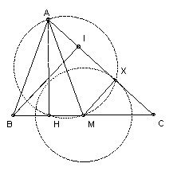

Construct a triangle ABC given the lengths of the altitudes from A and B and the length of the median from A.
Solution

Let M be the midpoint of BC, AH the altitude from A, and BI the altitude from B. Start by constructing AHM. Take X on the circle diameter AM with MX = BI/2. Let the lines AX, HM meet at C and take B so that BM = MC. [This works because CMX and CBI are similar with MX = BI/2 and hence CM = CB/2.]

Solutions are also available in: Samuel L Greitzer, International Mathematical Olympiads 1959-1977, MAA 1978, and in István Reiman, International Mathematical Olympiad 1959-1999, ISBN 189-8855-48-X.
2nd IMO 1960
© John Scholes
jscholes@kalva.demon.co.uk
18 Sep 1998
Last corrected/updated 24 Sep 2003